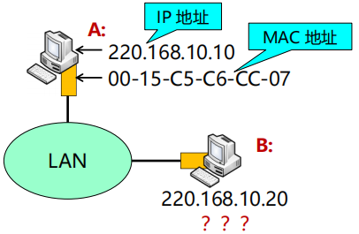

Network layer
约 14157 个字 69 张图片 预计阅读时间 94 分钟
章节重点
本章节相较于前几个章节，要求的掌握程度更高。
对于协议的原理和过程都需要有深入的理解，需要掌握协议的细节，网络层的算法(包括路由算法等)实现需要掌握。而对于其他部分(比如拥塞控制和服务质量)的要求会相对低一点。
网络层服务
网络层服务概述
接口层通常包括数据链路层和物理层
网络层服务的实现
- 网络层实现端系统间多跳传输可达
- 网络层功能存在每台主机和路由器中
- 发送端：将传输层数据单元封装在数据包中
- 接收端：解析接收的数据包中，取出传输层数据单元，交付给传输层
- 路由器：检查数据包首部，转发数据包
网络层关键功能
- 路由（控制面）
- 选择数据报从源端到目的端的路径
- 核心：路由算法与协议
- 转发（数据面）
- 将数据报从路由器的输入接口传送到正确的输出接口
无连接服务的实现
- 无连接服务：如寄信
- 不需要提前建立连接
- 数据报服务
- 网络层向上只提供简单灵活无连接的、尽最大努力交付的数据报服务
- 发送分组时不需要先建立连接，每个分组独立发送
- 数据报独立转发，相同源-目的的数据报可能经过不同的路径
- 网络层不提供服务质量的承诺
- 尽力而为交付
- 传输网络不提供端到端的可靠传输服务：丢包、乱序、错误
- 优点：网络的造价大大降低，运行方式灵活，能够适应多种应用
注意
H1 发送给 H2 的分组可能沿着不同路径传送。在数据包分片的情况下，尽量还是沿相同路径
无连接的数据报
数据报(datagram)：无连接的方法

无连接的方法允许分组有选择不同路径的可能性，但这样可能会导致接收数据的失序；需要说明的是，为避免增加额外的开销进行数据排序，网络并不会完全随意地发送数据，在大多数情况下，仍然是会尽量沿着某一条路径发送。
- 数据报转发策略：数据报转发决策基于分组的目的地址

数据报在转发的过程中能够看到的只有目的地址，在传输的过程中也就不会限定死输出的路径，而不同路径的传输时间可能不一样，这也正是导致数据包到达目的地址时失序的原因。
面向连接服务的实现
- 面向连接服务：如打电话
- 通信之间先建立逻辑连接：在此过程中，如有需要，可以预留网络资源
- 结合使用可靠传输的网络协议，保证所发送的分组无差错按序到达终点
- 虚电路是逻辑连接
- 虚电路表示这只是一条逻辑上的连接，分组都沿着这条逻辑连接按照存储转发方式传送，而并不是真正建立了一条物理连接
- 注意，电路交换的电话通信是先建立了一条真正的连接
- 因此分组交换的虚连接和电路交换的连接只是类似，但并不完全相同
数据发送
\(H_1\) 发送给 \(H_2\) 的所有分组都沿着同一条虚电路传送
面向连接的虚电路
注意
面向连接的方法也不一定能完全保证数据的可靠传输，链路中的任何一个组成环节仍有可能失效，而这种失效是严重的，可能导致所有数据丢失
- 虚电路转发策略
- 虚电路转发决策基于分组标签，即虚电路号
- 虚电路转发决策基于分组标签，即虚电路号
- 面向连接的服务
- 第一阶段：建立连接

- 第二阶段：发送数据
- 第三阶段：拆除分组
- 第一阶段：建立连接
虚电路与数据报网络的比较
这张表格的具体内容需要记住
虚电路与数据报网络的比较
- 性能比较
- 假设总带宽100Mbps，有2个数据源共享带宽
- 如果每个数据源都是突发流量，且最高可达70Mbps，使用虚电路服务，结果如何？

- 此时存在两种选择
- 丢掉一部分数据(这种情况下会导致数据的丢失)
- 按照带宽预留服务(这种情况下会降低信道资源的利用率)
- 此时存在两种选择
- 如果每个数据源都是突发流量，且最高可达70Mbps，使用数据报服务，结果如何？
- 因为数据报服务的时候是拆成一份一份的报文的，每一份报文所占的空间比较小，所以在传输的时候依然可以达到占满整个信道资源空间并且没有数据丢失的效果(性能完全不受影响，也不会过载)
- 效率比较
- 假设不考虑过载，发送同样多的数据，消耗的时间比较

- 假设不考虑A的发送时延和链路传播时延，在上图3个转接节点的情况下，链路上的数据传输速率 B bps，每个分组的长度 P bit，每个分组的开销 H bit，虚电路分组交换的呼叫建立时间 S s，每个转接点的转接延迟时间 D s，则：
- 虚电路分组交换总时延 T=S+3[D+(P+H)/B]
- 数据报分组交换总时延 T=3[D+(P+H)/B]
- 假设不考虑过载，发送同样多的数据，消耗的时间比较
Internet网际协议
IPv4协议
internet协议执行两个基本功能
- 寻址(addressing)
- 分片(fragmentation)
IPv4数据报格式
需要掌握前面5行，也就是前20个字节的内容(不变区域)
IP 数据报由首部和数据两部分组成

- 版本： 4bit ，表示采用的IP协议版本
- 首部长度： 4bit，表示整个IP数据报首部的长度
- 区分服务： 8bit ，该字段一般情况下不使用
- 总长度： 16bit ，表示整个IP报文的长度,能表示的最大字节为 \(2^{16}-1=65535\) 字节
- 标识： 16bit ， IP软件通过计数器自动产生，每产生1个数据报计数器加1；在ip分片以后，用来标识同一片分片
- 标志： 3bit，目前只有两位有意义；MF，置1表示后面还有分片，置0表示这是数据报片的最后1个；DF，不能分片标志，置0时表示允许分片
- 片偏移： 13bit，表示IP分片后，相应的IP片在总的IP片的相对位置(每个分片的长度一定是8B的整数倍)
- 生存时间TTL(Time To Live) ：8bit,表示数据报在网络中的生命周期，用通过路由器的数量来计量，即跳数（每经过一个路由器会减1）
- 协议：8bit，标识上层协议（TCP/UDP/ICMP…）
- 首部校验和：16bit ，对数据报首部进行校验，不包括数据部分
- 源地址：32bit，标识IP片的发送源IP地址
- 目的地址：32bit，标识IP片的目的地IP地址
- 选项：可扩充部分，具有可变长度，定义了安全性、严格源路由、松散源路由、记录路由、时间戳等选项
- 填充：用全0的填充字段补齐为4字节的整数倍
一些需要记住的东西
首部长度、总长度、片偏移的基本单位分别为4B、1B、8B
数据报分片
- MTU（Maximum Transmission Unit）, 最大传输单元
- 链路MTU
- 路径MTU (Path MTU)

- 分片策略
- 允许途中分片：根据下一跳链路的MTU实施分片
- 不允许途中分片：发出的数据报长度小于路径MTU（路径MTU发现机制）
- 重组策略
- 途中重组，实施难度太大
- 目的端重组（互联网采用的策略）
- 重组所需信息：原始数据报编号、分片偏移量、是否收集所有分片
- IPv4分组在传输途中可以多次分片
- 源端系统，中间路由器（可通过标志位设定是否允许路由器分片）
- IPv4分片只在目的IP对应的目的端系统进行重组
- IPv4分片、重组字段在基本IP头部
- 标识、标志、片偏移

根据实际情况，一般情况下不会允许中间分片
IP协议功能及报头字段总结
- 网络层基本功能
- 支持多跳寻路将IP数据报送达目的端：目的IP地址
- 表明发送端身份：源IP地址
- 根据IP头部协议类型，提交给不同上层协议处理：协议
- 其它相关问题
- 数据报长度大于传输链路的MTU的问题，通过分片机制解决：标识、标志、片偏移
- 防止循环转发浪费网络资源(路由错误、设备故障…)，通过跳数限制解决：生存时间TTL
- IP报头错误导致无效传输，通过头部机校验解决：首部校验和
IP地址
- IP地址，网络上的每一台主机（或路由器）的每一个接口都会分配一个全球唯一的32位的标识符
- 将IP地址划分为固定的类，每一类都由两个字段组成
- 网络号相同的这块连续IP地址空间称为地址的前缀，或网络前缀
IP特殊地址

子网划分
- 子网划分(subnetting)，在网络内部将一个网络块进行划分以供多个内部网络使用，对外仍是一个网络
- 子网(subnet)，一个网络进行子网划分后得到的一系列结果网络称为子网
- 子网掩码(subnet mask)，与 IP 地址一一对应，是32 bit 的二进制数，置1表示网络位，置0表示主机位
- 子网划分减少了 IP 地址的浪费、网络的组织更加灵活、便于维护和管理

子网划分具体实例
- 主机位全0，子网地址 \(172.16.2.128\)
- 主机位全1，广播地址 \(172.16.2.191\)
- 可分配IP地址范围 \(172.16.2.128+1 \sim 172.16.2.191-1\)
- 子网拥有主机数量 \(2^n-2=62~~(n=6)\)
注意：具体需不需要减去全0和全1这两种情况需要根据题目的具体要求来说
无类域间路由
CIDR (Classless Inter-Domain Routing)
- 将32位的IP地址划分为前后两个部分，并采用斜线记法，即在IP地址后加上“/”，然后再写上网络前缀所占位数

- 一个 CIDR 地址块可以表示很多地址，这种地址的聚合常称为路由聚合（route aggregation），也称为构成超网 (supernet)
- 聚合技术在Internet中大量使用，它允许前缀重叠，数据包按具体路由的方向发送，即具有最少IP地址的最长匹配前缀
具体实例
- /21表示前21位表示网络号，后面的11位表示子网空间，子网中一共可以有 \(2^{11}\) 个主机（忽略减2）
- 分配到的位置不是任意的，处于特定的位置
- 8192首先分位2份，一份为4096，这样Oxford只能从后半段开始处分，不能随便分
无类域间路由-Question
A large number of consecutive IP addresses are available starting at 202.101.0.0. Suppose that five organizations, A, B, C, D, and E, request 1024, 2000, 2000, 4096 and 512 addresses (including special IPs), respectively, and in that order. Please assign the IP address and the mask in the w.x.y.z/s notation (following the order of allocating the minimum address segment firstly).
答案
首先对 A 进行分析，它需要的地址个数为1024，也就是 \(2^{10}\) ，需要10个 bit 的空间，所以网络前缀所占位数为22，因此对于 A 来说，它的 CIDR 是 202.101.0.0/22，而它的子网空间的起始地址(前两个位置为10进制，后两个位置为2进制)为 202.101.xxxxxx|00.00000000，在这个式子中，最后10位是无法改变的，需要全部分配给子网空间，只有 x 表示的部分可以改变，所以对于倒数第二位来说，它可以的数字是 0, 4, 8, 12, 16...
同样的，B 和 C 的 CIDR 为 202.101.0.0/21，倒数第二位可以是 0, 8, 16, 24...，D 的 CIDR 为 202.101.0.0/20，它的倒数第二位可以是 0, 16, 32, 48, 64...，E 的 CIDR 为 202.101.0.0/23，它的倒数第二位可以是 0, 2, 4, 6, 8...
但是题目中又有要求，对于可以分配的地址，需要优先选择较小的地址，所以对于 A 来说，它的起始地址位 202.101.0.0，B 的起始地址为 202.101.8.0，C 的起始地址为 202.101.16.0，D 的起始地址为 202.101.32.0，E 的起始地址为 202.101.4.0
所以最终的答案是
- A: 202.101.0.0/22
- B: 202.101.8.0/21
- C: 202.101.16.0/21
- D: 202.101.32.0/20
- E: 202.101.4.0/23
最长前缀匹配
Longest prefix match
- CIDR可变长子网掩码以及路由聚合，需要最长前缀匹配来实现最精确匹配
- IP地址与IP前缀匹配时，总是选取子网掩码最长的匹配项
- 主要用于路由器转发表项的匹配，也应用于ACL规则匹配等
最长前缀匹配-Question

根据最长前缀匹配，下述目的IP将匹配哪个表项（出接口）？
- 2.5.1.2
- 2.200.1.2
- 2.150.1.2
- 3.150.1.2
答案
最长前缀匹配首先要求要能够匹配上，然后才是选择最长的那个
- 2.5.1.2: interface 3
- 2.200.1.2: interface 2
- 2.150.1.2: interface 1
- 3.150.1.2: interface 5
分类的IP地址(CIDR之前)
- IP地址共分为A、B、C、D、E五类，A类、B类、C类为单播地址
- IP地址的书写采用点分十进制记法，其中每一段取值范围为0到255

不够灵活，公司用不了1700万个ip地址，但是又会超过65536个地址
分类的IP地址-Question
请判断下列地址的类型
- 10.2.1.1
- 128.63.2.100
- 201.222.5.64
- 256.241.201.10
答案
- A 类
- B 类
- C 类
- 不存在，超出范围
DHCP
IPv4地址如何获取
- 公有IP地址要求全球唯一
- ICANN（Internet Corporation for Assigned Names and Numbers）即互联网名字与编号分配机构向ISP分配，ISP再向所属机构或组织逐级分配
- 静态设定
- 申请固定IP地址，手工设定，如路由器、服务器
- 动态获取
- 使用DHCP协议或其他动态配置协议
- 当主机加入IP网络，允许主机从DHCP服务器动态获取IP地址
- 可以有效利用IP地址，方便移动主机的地址获取
DHCP动态主机配置协议
- DHCP：动态主机配置协议
- 当主机加入IP网络，允许主机从DHCP服务器动态获取IP地址
- 可以有效利用IP地址，方便移动主机的地址获取
- 工作模式：客服/服务器模式 (C/S)
- 基于 UDP 工作，服务器运行在 67 号端口， 客户端运行在 68 号端口

- 基于 UDP 工作，服务器运行在 67 号端口， 客户端运行在 68 号端口
注意：端口号需要记住
DHCP 工作过程
- DHCP 客户从UDP端口68以广播形式向服务器发送发现报文（DHCPDISCOVER）
- DHCP 服务器单播发出提供报文（DHCPOFFER）
- DHCP 客户从多个DHCP服务器中选择一个，并向其以广播形式发送DHCP请求报文（DHCPREQUEST）
- 被选择的DHCP服务器单播发送确认报文（DHCPACK）
yiaddrr：给客户机的ip地址
DHCP offer 在默认情况下是单播的，但是如果客户机不能接收单播，只能接收广播的话就会广播(图中这种就是特殊情况)
DHCP的广播过程是广播 - 单播 - 广播 - 单播
DHCP request 步骤中为什么在知道DHCP服务器的ip地址时仍然广播？
网络中可能存在多个DHCP服务器，客户机可能收到多个offer（包含多个ip地址），这一步中客户机告诉所有的DHCP服务器自己具体接收的ip地址，而不是仅仅告诉给自己offer的服务器
DHCP 完整工作流程

小结
表格需要记住
ARP
IP 与 MAC 地址
ARP地址解析协议（Address Resolution Protocol）
IP 数据包转发：从主机 A 到主机 B
- 检查目的IP地址的网络号部分
- 确定主机B与主机A属相同IP网络
- 将IP数据包封装到链路层帧中，直接发送给主机B

帧结构
给定B的IP地址，如何获取B的MAC地址？
ARP地址解析协议
- A已知B的IP地址，需要获得B的MAC地址（物理地址）
- 如果A的ARP表中缓存有B的IP地址与MAC地址的映射关系，则直接从ARP表获取
- 如果A的ARP表中未缓存有B的IP地址与MAC地址的映射关系，则A广播包含B的IP地址的ARP query分组
- 在局域网上的所有节点都可以接收到ARP query
- B接收到ARP query分组后，将自己的MAC地址发送给A
- A在ARP表中缓存B的IP地址和MAC地址的映射关系
- 超时时删除
ARP协议工作过程
IP包转发
- 与目的主机在同一个IP子网内时，直接交付
- 与目的主机不在同一个IP子网内时，通过路由发送到另一个局域网(假设源为A，目的为E，中间路由为R)
- A创建IP数据包
- 在源主机A的路由表中找到路由器R的IP地址
- A根据R的IP地址，使用ARP协议获得R的MAC地址
- A创建数据帧(目的地址为R的MAC地址)
- 数据帧中封装A到E的IP数据包
- A发送数据帧，R接收数据帧
- R进行数据帧的转发
NAT
网络地址转换(NAT)用于解决IPv4地址不足的问题，是一种将私有（保留）地址转化为公有IP地址的转换技术
外网上的ip地址都是唯一的，但是不同内网中的ip地址可以重复
私有IP地址的格式：
- A类地址：10.0.0.0--10.255.255.255
- B类地址：172.16.0.0--172.31.255.555
- C类地址：192.168.0.0--192.168.255.255
NAT工作机制
所有的在本地网络中的主机发出的报文都是通过连接内网和外网的路由器发出到互联网中的，这些从这个NAT路由器中发出的报文具有相同的源IP地址。也就是说，内网中的所有数据首先发送到NAT路由器，然后再由路由器转发到外网中。当这些报文在内网中传输时，地址是各个主机在内网中的地址，但是当它们通过了NAT路由器后，会变成这个内网在整个互联网上唯一的IP地址。
如何区分到底是内网中的哪台主机？
使用端口号进行区分。
一般来说，端口号用于标识具体的应用，但是在NAT中端口号用于标识内网中的不同主机(更加细致的来说，端口号标识的是内网中不同主机上的不同应用)
具体步骤说明
- 内网中的路由器可以判断整个数据包的目的地址是不是内网的，如果不是内网的就会发送给内网与外网之间的NAT路由器
- 网络地址转换，将内网的地址转化为整个内网的唯一出口IP地址，并且添加端口号。同时记录两个数据包之间的映射关系
- 服务器收到请求之后对请求做出响应，将数据包发送给外网地址
- NAT路由器收到数据包后查表转发给对应的内网地址的对应端口
思考：同一主机不同应用，或者不同主机的同一端口，NAT转换如何处理？
转化成不同的端口，也就是说区分到内网的具体的某个主机的某个应用(端口)
NAT工作机制总结
- 出数据报：外出数据报用NAT IP地址(全局), 新port替代源IP地址(私有)port
- NAT转换表：每个 (源IP地址, port)到(NAT IP地址, 新port)映射项
- 入数据报：对每个入数据报的地址字段用存储在NAT表中的(源IP地址, port)替代对应的(NAT IP地址, 新port)
网络地址转换
- NAT根据不同的IP上层协议进行NAT表项管理(TCP, UDP, ICMP)
- 传输层TCP/UDP拥有16-bit端口号字段
NAT中的端口号是动态的，使用时会有动态的删减
NAT的优势与缺点
- 优势
- 节省合法地址，减少地址冲突
- 灵活连接Internet
- 保护局域网的私密性
NAT使得外网难以攻击到内网的机器，可以很好的保证安全性。是优点，但是同时也是导致NAT难以过渡的重要原因
- 问题或缺点
- 违反了IP的结构模型，路由器处理传输层协议
- 违反了端到端的原则
- 违反了最基本的协议分层规则
- 不能处理IP报头加密
- 新型网络应用的设计者必须要考虑 NAT场景，如P2P应用程序
这些问题使得NAT在使用过程中经常需要解决内网穿透问题(在家里无法连接学校的服务器)。在这种情况下，互联网世界就是一个巨大的内网的集合，导致了使用的不便
NAT传输问题
一个处于外网中的主机想要连接到一个内网中的某个主机(10.0.0.1)，但是它只能获得整个子网的IP地址，无法连接到子网内部的哪一个具体的主机。
一种可能的解决方式
通过外网的一个中间路由器实现连接，需要让内网的主机主动去连接这个路由器，使得路由器保存这个内网中的主机的通信地址及端口，然后两者通过这一个路由器实现通信。
新的问题
所有的流量都需要通过服务器，而公网的流量是非常昂贵的。
所以一般来说，公网的路由器只是起一个配置的作用，具体的流量传输通过第三方实现。
ICMP
网际控制报文协议
ICMP允许主机或路由器报告差错情况和提供有关异常情况的报告，由主机和路由器用于网络层信息的通信。
ICMP报文携带在IP数据报中：IP上层协议号为1
ICMP报文类型
- ICMP差错报告报文
- 终点不可达：不可达主机、不可达网络，无效端口、协议
- ICMP询问报文
- 回送请求/回答(ping使用)
Ping和ICMP
PING用来测试两个主机之间的连通性，使用了ICMP回送请求与回送回答报文
可以根据TTL的值判断服务器的操作系统以及对应的版本
具体判断方式，待补充...
Traceroute和ICMP
使用TraceRT命令可以知道整个路径上路由器的地址
实现方式
通过设置不同TTL的值来控制数据包可以传输的距离(TTL=1, 2, 3, ...)
当第n个数据报到达第n和路由器：路由器丢弃数据报，并向源发送一个ICMP报文(类型 11, 编码0)，报文的源IP地址就是该路由器的IP地址
但是路径可能是不准确的，因为现在互联网上的数据包都是独立被路由的，它们走的可能是不同的路径
停止条件
- UDP段最终到达目的地主机
- 目的地返回ICMP “端口不可达”分组(类型3, 编码3)
- 当源得到该ICMP，停止
一道经典例题
参考资料：数据报格式
答案与解析
第1问：49，对于这一小问，只需对应数据报格式即可，从数据包格式中可以看出，TTL是数据包中的第9个字节，对应到p2就是0x31，转化为十进制就是49。
第2问：15，这一问与上一问类似，首先看到p6的TTL是0x40，也就是64，然后查看p6在发送时候的TTL是多少，想要对应数据报，可以使用其中的Identification字段，也就是第5, 6个字节，通过对比可以看出与p6对应的是p5，而p5的TTL是0x31，也就是49，所以p6在到达A之前的路由跳数为64-49=15。
第3问：p2，想要查看哪一份数据包不是A发送的，只需要查看数据包的发送地址是不是A的地址就行，也就是第13-16个字节，通过对比就可以看出p2数据包不是A发送的。p3，MAC层的数据报的长度需要补充，也就说明这个数据报的长度小于46个字节，查看第3-4字节，就可以看到数据报的程序，发现只有p3的长度为0x28，也就是40个字节，小于46个字节。
第4问：160.8.0.80，查看B的公网IP，此时应该查看发送给B的数据报，比如p1，在查看第17-20字节获取公网IP，也就是A0.08.00.50，转化成10进制就是160.8.0.80，
第5问：192.10.1.6，原理如上一问。
第6问：分为两片，第一片(length:796, MF:1, offset:0)，第二片(length:760, MF:0, offset:97)，对于这一问，首先需要知道数据报p7的长度，查看第3-4字节，可以看到长度是0x0600，也就是1536，又因为单份数据报的最大长度为800，需要预测需要分成2份，然后就可以得出第1份的MF为1，第2份的MF为0，并且第一份的offset为0。接着求后面的三个数据，因为一份切片的长度最大为800，所以除了报头的20个字节外，剩余的数据空间为780个字节，又因为数据部分的程度一定是8的倍数，所以第一份切片的数据部分的长度为776个字节，所以第一个切片的长度为776+20=796个字节。接下来看第二个切片，总的数据长度为1536-20=1516，第一个切片中的数据长度为776，所以第二个切片中的数据长度为1516-776=740，整个切片的大小为740+20=760。同时，又因为数据是以8个字节为单位的，所以数据的偏移量为776/8=97。
路由算法
根据路由算法是否随网络的通信量或拓扑自适应划分
- 静态路由选择策略(非自适应路由选择)
- 动态路由选择策略(自适应路由选择)
优化原则
汇集树(Sink Tree)
所有的源节点到一个指定目标节点的最优路径的集合构成一棵以目标节点为根的树
汇集树不是唯一的
一棵路由器B的汇集树
最短路径算法
采用Dijkstra算法
- 建立网络图
- 节点表示路由器
- 边表示通信线路/链路
- 链路代价表示链路上的距离、信道宽度或通信开销等参数
- 根据算法在网络图上为某一对路由器找之间的最短路径
具体例子(A到D的最短路径过程)
距离向量路由
- Bellman-Ford 方程
- 假设 \(D_x(y)\) 是从x到y最小代价路径的代价值
- 则：\(D_x(y) = min {c(x,m) + D_m(y) }\) ，其中m为x的邻居, c(x,m)为m到X的距离
- 示例：
- 已获知 \(D_v(z) = 5, D_x(z) = 3, D_w(z) = 3\)
- \(D_u(z)= min \{ c(u,v) + D_v(z), c(u,x) + D_x(z), c(u,w) + D_w(z) \}\)
\(= min \{2 + 5,1 + 3, 5 + 3\} = 4\) - 计算出代价最小的节点，也就得到了对应转发项从u去往z，应从x转发
- 距离向量(Distance Vector)算法基本思想:
- 每个节点周期性地向邻居发送它自己到某些节点的距离向量
- 当节点x接收到来自邻居的新DV估计，它使用B-F方程更新其自己的DV
$D_x(y) ← min_v{c(x,v) + D_v(y)}~for~each~node~y ∊ N $ - 上述过程迭代执行，\(D_x(y)\) 收敛为实际最小费用 \(d_x(y)\)
- 距离向量算法特点：迭代的、分布式的
- 每次本地迭代由下列引起: 本地链路费用改变、邻居更新报文
- 分布式:各节点依次计算，相互依赖
一些注意点
DV的元素个数就是网络中节点的个数
一直都在动态更新，不一定是瞬时最优的
每个节点都会发送所有几点的路径长度，但是发送范围是小范围的
DV的缺点
- 对好消息反应很快，但是对坏消息反应迟钝
- 好消息：假设一开始五个节点都不工作，之后A开始工作，那么只需要5次交换就能完成所有的路由更新
- 坏消息：假设A突然不工作，那么B以为C有更短路径，于是更新；C也以为B有更短路径，于是更新；这导致数据出错(count-to-infinity)
如果解决Count-to-infinity问题
Poisoned reverse (毒性逆转, RFC 1058)
基本思想：如果C是从B到达A的，那么C告诉B通过自己到达A的距离是 infinite 的，这个B就不会根据C的结果更新了
但是并没有完全解决问题。仍然可能出现这个问题
考虑一种情况
此时在正常情况下，A到达D的距离为2(经过C)，B到达D的距离为2(经过C)，C到达D的距离为2(直达)。
如果此时C和D之间的路径断开了，那么C就会向A和B发送信息，告诉它们现在自己到达D的路径长度是∞。但是因为信息发送到A和B的时间是不一样的，所以会产生问题。
假设A首先收到C发送过来的消息，此时它已知的信息是从C到达D的距离为∞，从B到达D的距离为2，于是它更新自己的信息为通过B到达D，并且距离为3，然后将这个消息发送给B和C。
C接收到这个消息之后，此时有的信息是通过B到达D的距离为∞(因为此时B还是通过C到达D的，根据毒性逆转要求，此时告知C的信息为自己到D的距离为∞)，通过A到达D的距离为3，于是更新自己的信息为通过A到达D，距离为4，然后将这个消息发送给A和B。
B收到消息之后，此时有的消息是通过A到达D的距离为∞(毒性逆转)，通过C到达D的距离为4，于是更新自己的信息为通过C到达D，距离为5，然后将消息发送给A和C。
A收到消息后，已知通过B到达D的距离为5，通过C到达D的距离为∞(毒性逆转),于是更新自己的信息为通过B到达D，距离为6，然后将信息发送给B和C。
C收到消息后......
此时就会陷入死循环，并且路径长度不断增加，也就是陷入count-to-infinity问题
链路状态路由
链路状态(Link State)路由可分为五个部分：
- 发现邻居，了解他们的网络地址；
- 设置到每个邻居的成本度量；
- 构造一个分组，分组中包含刚收到的所有信息；
- 将此分组发送给其他的路由器；
- 计算到其他路由器的最短路径。
LS和DV的不同之处
LS是把局部状态发给全局，而DV是把全局状态发给局部
详细过程
- 发现邻居，了解他们的网络地址
- 设置到每个邻居的成本度量
- 开销/度量/代价：
- 自动发现设置或人工配置
- 度量：带宽、跳数、延迟、负载、可靠性等
- 常用度量：链路带宽（反比）
- 例如：1-Gbps以太网的代价为1，100-Mbps以太网的代价为10
- 可选度量：延迟
- 发送一个echo包，另一端立即回送一个应答
- 通过测量往返时间RTT，可以获得一个合理的延迟估计值
- 开销/度量/代价：
- 构造一个分组，分组中包含刚收到的所有信息
- 构造链路状态分组(link state packet)：发送方标识、序列号、年龄、邻居列表
- 构造链路状态分组(link state packet)：发送方标识、序列号、年龄、邻居列表
- 将LS分组发送给其他的路由器
- 每个LS分组包含一个序列号，且递增
- 路由器记录所收到的所有（源路由器、序列号）对
- 当一个新分组到达时，路由器根据记录判断：
- 如果是新分组，洪泛广播
- 如果是重复分组，丢弃
- 如果是过时分组，拒绝
- 计算到其他路由器的最短路径：Dijkstra算法示例
- D(k)：从计算节点到目的节点k当前路径代价
- p(k)：从计算节点到目的节点k的路径中k节点的前继节点
距离向量和链路状态算法比较
- 网络状态信息交换的范围
- DV:邻居间交换
- LS:全网扩散
- 网络状态信息的可靠性
- DV:部分道听途说
- LS:自己测量
- 健壮性
- DV:计算结果传递，健壮性差
- LS: 各自计算，健壮性好
- 收敛速度
- DV: 慢,可能有计数到无穷问题
- LS: 快
层次路由
产生原因
- 路由的数据如果都存储在一张路由表中，会导致路由表及其庞大(路由表的存储价格高昂)
- 过于庞大的路由表存储、查找困难，路由信息交互开销高
- 可以通过地址聚合来缩减路由条目，从而减小路由表存储空间
- 地址聚合依赖于连续的地址分配及拓扑结构
- 现实情况：
- 地址分配往往是随机的，难以进行高效的地址聚合
- 每个网络的网络管理员有自己的管理方法和思路，并不希望每个路由器都干涉本网络内部的地址分配等问题
- 层次路由可以解决：
- 网络扩展性问题：当网络扩大时，控制路由表条目和路由表存储空间的增长
- 管理的自治问题：网络管理员可以控制和管理自己网络的路由
实现层次路由的基本思路
- 自治系统(AS, Autonomous System)
- 一个管理机构控制之下的网络
- 一个AS内部通常使用相同的路由算法/路由协议，使用统一的路由度量（跳数、带宽、时延 …）
- 不同的AS可以使用不同的路由算法/路由协议
- 每个AS有一个全球唯一的ID号：AS ID 自治系统内的还可以进一步划分层次：私有自治系统或区域
两层路由，骨干网中的路由负责将数据包转发到AS，然后后续的转发在AS内部进行
- 自治系统内部使用内部网关路由协议，Interior Gateway Protocols (IGP)
- 每个自治系统域内路由算法可不同
- 典型IGP协议：OSPF，RIP，IS-IS，IGRP，EIGRP……
- 自治系统之间之间使用外部网关路由协议，Exterior Gateway Protocols (EGP)
- 各自治系统域之间的路由需统一
- 典型EGP协议：BGP
层次路由的效果
层次路由大大降低路由表的开销
广播路由(可选)
广播（Broadcasting）：源主机同时给全部目标地址发送同一个数据包
服务器希望将视频广播给3个网络中的所有30个用户，有哪些办法？
- 方法1：给每个主机单独发送一个数据包
- 效率低、浪费带宽
- Server需要知道每个目的地址
- 方法2：多目标路由（multi-destination routing）
- 在需要转发的路由器线路复制一次该数据报
- 网络利用率高
- Server依然需要知道所有的目的地址
方法1和方法2都难以实现
- 方法3：泛洪（flooding）
- 一种将数据包发送到所有网络节点的简单方法
- 将每个进入数据包发送到除了进入线路外的每条出去线路
- 用途
- 保证性：一种有效广播手段，可确保数据包被传送到网络中每个节点
- 鲁棒性：即使大量路由器被损坏，也能找到一条路径（如果存在）
- 简单性：仅需知道自己的邻居
- 方法4： 生成树（spanning tree）
- 源节点向所有属于该生成树的特定链路发送分组
- 改进了逆向路径转发
- 没有环路
- 最佳使用带宽
- 最少副本，消除了冗余分组
- 一个路由器可以不必知道整颗树，只需要知道在一颗树中的邻居即可
- 小问题：路由器中需要维护较多的生成树
泛洪
- 无控制的泛洪
- 实现广播最显而易见的技术
- 环路可能导致广播风暴(无控制的泛洪的问题)
- 路由器可能收到多个副本
- 节点需要跟踪已泛洪的数据包以阻止洪泛
- 即使利用跳数来限制，也会出现成倍爆炸
- 受控制的泛洪（每个路由器进行有选择的泛洪）
- 序号控制泛洪（sequence-number-controlled flooding）
- 逆向路径转发（reverse path forwarding, RPF）
一个来源是N1的包，但是从N2或者N3过来，就不会进行转发
不能完全避免重复包，但是也已经在很大程度上解决了环路问题
- 序号控制泛洪（sequence-number-controlled flooding）
组播路由
组播(multicasting)：源主机给网络中的一部分目标用户发送数据包
组播路由算法的目标
- 为每个组建立多播转发树（到达该组所有成员的路径树）
- 每个组成员应当只收到多播分组的一个拷贝
- 非本组成员不应收到多播分组
- 从源节点到每一个组成员节点的路径应当是最佳的（最短路径）
组播实现的两个步骤
- 确定组成员：边缘路由器通过与主机交互，了解到从它的某个端口可以到达哪些组的成员——主机与路由器之间的组成员关系协议
- IGMP (Internet Group Management Protocol) - 协议负责组播路由中组播成员的管理
- 路由器获悉该网段的组播组成员
- 常用组播地址段：224.0.0.0/24
- IGMP (Internet Group Management Protocol) - 协议负责组播路由中组播成员的管理
- 生成树——路由器与路由器之间的协议
- 数据包沿生成树发送
- 最佳生成树的使用取决于组的密度分布
- 密集分布：接受者遍布在网络的大部分区域
- 稀疏分布：大部分网络区域都不属于组播组
密集分布，基于源点树(source-based trees)
- 链路状态路由算法：每个路由器针对组内的每个发送者构造一颗独立树，例如多播开放最短通路优先协议（Multicast Open Shortest Path First，MOSPF）
- 距离向量路由算法：逆向路径转发，修剪没有组成员的路由器，例如距离向量多播路由协议（Distanse Vector Multicast Routing Protocol, DVMRP）、协议无关多播-稠密模式（Protocol Independent Multicast - Dense Mode, PIM-DM）
基于源点树存在的问题：
- 大型网络中，组播源很多时，路由器需生成多颗棵树，工作量巨大
- 路由器需要大量空间来存储多颗树
稀疏分布，基于核心树(core-based trees)
- 多个组播源共享树
- 大大节省存储开销、消息发送和计算
- 每个路由器只需要保存一棵树
- 不属于共享树的路由器不需要为组做任何工作
- 例如协议无关多播-稀疏方式（ Protocol Independent Multicast - Sparse Mode，PIM-SM），特定源组播（ Protocol Independent Multicast - source-specific multicast, PIM-SSM）
基于核心树存在的问题：
- 可能无法达到最优
- 如果只有一个发送者，将发送者作为核心是最优的
选播路由(可选)
选播(Anycast)：将数据包传送给最近的一个组成员
典型应用：DNS
- 在没有指定DNS服务器的情况下，用户将始终连接到“最接近”(从路由协议角度来看) 服务器，可以减少延迟，并提供一定程度的负载平衡
- 易于配置管理，不必根据服务器/工作站的部署位置(亚洲、美国、欧洲)配置不同的DNS服务器，而是在每个位置配置一个IP地址
- 可以提供一定程度的高可用性，一旦服务器发生故障，用户请求将无缝转发到下一个最接近的DNS实例，而无需任何手动干预或重新配置
- 可以水平缩放，如果一台服务器负载过重，只需在一个位置部署另一台服务器，以承担一部分重载服务器的请求，且不需要客户端配置
Internet路由协议
OPSF-内部网关路由协议
OSPF(Open Shortest Path First)开放最短路径优先协议，采用分布式的链路状态算法
基本思想
- 向本自治系统中所有路由器洪泛信息
- 发送的信息就是与本路由器相邻的所有路由器的链路状态
- 只有当链路状态发生变化时路由器才用洪泛法发送此信息
链路状态
- 链路状态就是说明本路由器都和哪些路由器相邻，以及该链路的度量(metric)：OSPF度量值一般包括费用、距离、时延、带宽等
- 由于各路由器之间频繁地交换链路状态信息，因此所有的路由器最终都能建立一个链路状态数据库LSDB
- 这个数据库实际上就是区域内的拓扑结构图，它在区域内是一致的(这称为链路状态数据库的同步)
区域
- OSPF支持将一组网段组合在一起，称为一个区域
- 详细的描述拓扑结构的链路状态信息仅在区域内传递，区域间传递的是抽象的路由信息
- 使用层次结构的区域划分，上层的区域叫做主干区域(backbone area)，其他区域都必须与主干区域相连，称为非主干区域
- 非主干区域之间不允许直接发布区域间路由信息
- 区域也不能太大，在一个区域内的路由器最好不超过 200 个
-
划分区域可以缩小LSDB规模，减少网络流量
-
路由器角色
- 内部路由器 (Internal Router，IR)
- 区域边界路由器 (Area Bounder Router，ABR) - 连接主干区域和别的区域
- 自治系统边界路由器(AS Bounder Router，ASBR)
OSPF是网络层协议，不使用TCP或UDP，而直接用IP数据报发送
小结
OSPF的特点
- 支持无类域间路由(CIDR)
- 无路由自环
- 收敛速度快
- 使用IP组播收发协议数据
- 支持多条等值路由
- 支持协议报文的认证
RIP-内部网关路由协议
路由选择协议RIP(Routing Information Protocol)是基于距离矢量算法的协议，使用跳数衡量到达目的网络的距离(RIP 允许一条路径最多只能包含 15 个路由器)
基本思想
- 仅和相邻路由器交换信息
- 路由器交换的内容是自己的路由表(DV中包含的是自己到达每个节点的最短距离以及数据包出去的接口)
- 周期性更新：30s
RIP是应用层协议，使用UDP传送数据(端口520)
小结
- RIP协议的特点
- 算法简单，易于实现
- 收敛慢
- 需要交换的信息量较大
- 具有好消息传播快，坏消息传播慢的特点
- RIP协议的适用场合：中小型网络
- RIP协议的防环路机制
- 触发更新
- 毒性反转
- 水平分割
- 其他
BGP-外部网关路由协议
- 路由协议
- 内部网关协议 IGP： 有 RIP 和、OSPF、ISIS 等多种具体的协议
- 外部网关协议 EGP：目前使用的协议就是 BGP
- 边界网关协议BGP (Border Gateway Protocol)
- 目前互联网中唯一实际运行的自治域间的路由协议
- BGP功能
- eBGP：从相邻的AS获得网络可达信息
- iBGP： 将网络可达信息传播给AS内的路由器
- 基于网络可达信息和策略决定到其他网络的“最优”路由

BGP是应用层协议，基于TCP
BGP基础
BGP会话: 两个BGP路由器通过TCP连接交换BGP报文，通告到不同网络前缀的路径，即路径向量协议
BGP路径通告
通告到AS3中X的路径
BGP协议的特点
- BGP 协议交换路由信息的结点数量级是自治系统数的量级
- 每一个自治系统边界路由器的数目是很少的
- 在 BGP 刚刚运行时，BGP 的邻站是交换整个的 BGP 路由表；以后只需要在发生变化时更新有变化的部分
- BGP为每个AS提供：
- 从邻居AS获取网络可达信息(eBGP协议)
- 传播可达信息给所有的域内路由器(iBGP协议)
- 根据“可达信息”和“策略”决定路由
BGP报文
BGP通过TCP的179端口交换报文
BGP路由选择
选择规则：自上向下，依次排序
- 本地偏好值属性：政策决策
- 最短的AS-PATH
- 最近的NEXT-HOP路由器
- 附加标准...
- 最低路由器ID
BGP路由策略
- 路由器使用策略决定接受或拒绝接收到的路由通告
- 路由器也会基于策略决定是否向其他相邻AS通告路径信息
标签交换和MPLS
概述
- MPLS(MultiProtocol Label Switching)全称是多协议标签交换
- 多协议表示在 MPLS 的上层可以采用多种协议，例如：IP，IPv6、IPX
- 标签是指每个分组被分配一个标签，路由器根据该标签对分组进行转发
- 交换是指标签的交换，MPLS 报文交换和转发是基于标签的
- MPLS 设计初衷为了提升查找速度
- MPLS 主要有以下三个方面的应用
- 面向连接的服务质量管理
- 流量工程，平衡网络负载
- 虚拟专用网VPN
- 标签交换路由器LSR：具备标签交换、路由选择两种功能
- MPLS域：所有相邻的支持MPLS技术的路由器构成的区域
- 标签分配协议LDP：用来在LSR之间建立LDP 会话并交换Label/FEC映射信息
工作过程
- 加标签
- 在MPLS域的入口处，给每一个IP数据报加上标签，然后对加上标记的IP数据报用硬件进行转发
- 标签交换(路由内部存在一个映射表，查找表中的信息实现标签交换)
- 采用硬件技术对加上标记的IP数据报进行转发称为标签交换
- 去标签
- 当分组离开MPLS域时，MPLS出口路由器把分组的标签去除。后续按照一般IP分组的转发方法进行转发
路由器工作原理
路由器概述
路由器是互联网最主要的网络设备，包含2个核心功能
- 控制层：运行各种路由协议：BGP、OSPF、RIP，学习去往不同目的的转发路径：路由表
- 数据层：根据上述路由表，将收到的IP分组转发到正确的下一跳链路
路由器控制层
- 路由器可同时运行多个路由协议
- 路由器也可不运行任何路由协议，只使用静态路由和直连路由
- 路由管理根据路由优先级，选择最佳路由，形成核心路由表
- 控制层将核心路由表下发到数据层，形成转发表（FIB）
若存在多个“去往同一目的IP前缀”的不同类型路由，路由器根据优先级选择最佳路由
路由器数据层
- 路由器中IP报文转发核心功能
- 链路层解封装，IP头部校验
- 获取报文目的IP地址
- 用目的IP地址，基于最长前缀匹配规则查询转发表
- 查询失败，丢弃报文
- 查询成功
- 获取转发出接口和下一跳IP地址
- IP头部“TTL”字段值减1，重新计算IP头部“校验和”
- 重新进行链路层封装，发送报文
注：普通IP报文转发过程中，路由器不查看传输层及以上层协议的内容
- IP报文在路由器转发前后的变化
- 链路层封装更新，IP头部“TTL”减1，IP头部“校验和”更新
数据报在不同硬件单元的处理
路由器交换结构
3种典型的交换结构
路由器扩展知识
- 路由器的端系统角色
- 也作为网络端系统进行协议交互
- 远程网络管理，SNMP
- 远程网络配置，SSH
- 文件传输，FTP，TFTP
- 各种路由协议交互
- ...
- 路由器系统包含完整TCP/IP协议栈
- 传输层协议
- 应用层协议
- 也作为网络端系统进行协议交互
- 家用路由器
- 不运行动态路由协议（出口唯一）
- 运行DHCP协议，分配私有IP
- NAT地址转换
- 本地DNS服务
- 用户管理及认证
- 防火墙功能
- 无线AP
- ...
拥塞控制算法
拥塞控制概述
- 拥塞：网络中存在太多的数据包导致数据包传输延迟或丢失，从而导致网络吞吐量下降
- 拥塞控制（congestion control）：需要确保通信子网能够承载用户提交的通信量，是一个全局性问题，涉及主机、路由器等多种因素
- 产生拥塞的原因:
- 主机发送到网络的数据包数量过多，超过了网络的承载能力
- 突发的流量填满了路由器的缓冲区，造成某些数据包会被丢弃
流量调节
显式拥塞通告(ECN，Explicit Congestion Notification)，在IP包头中记录数据包是否经历了拥塞。在数据包转发过程中，路由器可以在包头中标记为经历拥塞，然后接收方在它的下一个应答数据包里回显该标记作为显式拥塞信号
服务质量
综合服务
- 综合服务特点是：需要所有的路由器在控制路径上处理每个流的消息，维护每个流的路径状态和资源预留状态，在路径上执行基于流的分类、调度、管理
- 综合服务基于资源预留协议RSVP，逐节点建立或拆除流的状态和资源预留状态，根据流的状态进行QoS路由
- 综合服务的特征：资源预分配、全局流状态、传输控制
区分服务
- 区分服务（DiffServ）是一种计算机网络体系结构，它指定了一种简单且可扩展的机制，用于在IP网络上分类和管理网络流量并提供服务质量（QoS）
- DiffServ可用于向诸如语音或流媒体之类的关键网络流量提供低延迟服务，同时向诸如web流量或文件传输之类的非关键服务提供简单的尽力而为服务
- DiffServ在IP报头的8位区分服务字段(DS字段)中使用6位区分服务码点(DSCP)进行分组分类。换言之，DS字段替换过时的IPv4 TOS字段
三层交换与VPN
VPN技术背景
- 虚拟专用网VPN (Virtual Private Network)
- 专用网络的经济、可靠、灵活的解决方案
- 利用安全隧道技术将专用网络在公共网络上扩展
- VPN的设计原则
- 安全性、隧道与加密、数据验证、用户验证、防火墙与攻击检测
VPN的原理
- VPN指利用公用网络架设专用网络的远程访问技术
- VPN通过隧道技术在公共网络上模拟出一条点到点的逻辑专线，从而达到安全数据传输的目的
- VPN对数据机密性和完整性的保护
IPv6技术
地址表示
IPv6地址表示法，冒分十六进制，x:x:x:x:x:x:x:x
- 简化方法：每个x前面的0可省略，可把连续的值为0的x表示为“::”, 且“::”只能出现1次
- 简化前地址，2001:0DA8:0000:0000:200C:0000:0000:00A5
- 简化后地址，2001:DA8:0000:0000:200C::A5
IPv6头部
- 版本：4bit，协议版本号，值为6
- 流量类型：8bit，区分数据包的服务类别或优先级
- 流标签：20bit，标识同一个数据流
- 有效载荷长度：16bit ，IPv6报头之后载荷的字节数(含扩展头)，最大值64K
- 下一个首部：8bit ，IPv6报头后的协议类型，可能是TCP/UDP/ICMP等，也可能是扩展头
- 跳数限制：8bit ，类似IPv4的TTL，每次转发跳数减1，值为0时包将会被丢弃
- 源地址： 128bit ，标识该报文的源地址
- 目的地址： 128bit ，标识该报文的目的地址
IPv6头部字段分析
- IPv6头部长度固定40字节，所有“选项”字段都在IPv6扩展头部分
- 与IPv4头部的比较
- 去除“首部长度”（首部长度固定为40字节）
- 去除“首部校验和”（传输层校验会涉及伪头部信息），提升转发速度
- 去除分片字段：“标识”“标志”“片偏移”，移至扩展头（分段头）
- IPv6分片机制
- IPv6分组不能在传输途中分片，只在源端进行分片
- IPv6设计了专门的分片扩展头，分片字段不存在基本IPv6头部中
- IPv6支持Path MTU发现机制
首部格式改变提升转发处理速度
- IPv6报文可承载多个扩展头
- 每个扩展头都包含“下一个首部”字段（IPv6首部固定字段也有）
- 可指向下一个扩展头类型
- 或指明传统上层协议类型（最后一个扩展头）： TCP/UDP/ICMP...
- 如有多个扩展头，需按规定顺序出现
- 逐跳选项头，转发路径上每个节点都需检查该扩展头的信息
- 路由头，指明转发途中需经过哪些节点，类似于IPv4的源路由机制
- 分段头，包含类似IPv4分片处理信息：片偏移、“更多段”标志、标识符
- 目的地选项头，目的端系统需要确认的信息
- ...
IPv6地址及配置
- IPv6地址分类
- 未指定地址（::/128），不能分配给任何节点
- 回环地址（::1/128），表示节点自己，不分配，类似IPv4中的127.0.0.1
- 组播地址（FF00::/8）
- 链路本地地址（FE80::/10），也称为Link-local地址，仅在本地链路上使用，网络设备根据接口MAC地址自动生成
- 全局单播地址，其它地址
- IPv6地址配置方式
- 手动配置
- DHCPv6（IPv6动态主机配置协议）
- 无状态地址自动配置，基于ND协议的RS报文的IPv6前缀信息，结合自己的链路层地址生成IPv6地址
IPv4到IPv6迁移及过渡技术
主流过渡技术
- 双栈技术
- 隧道技术
- 翻译技术
隧道技术
IPv4/IPv6翻译